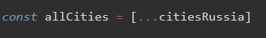

Оператор spraed используется для манипуляции с массивами и объектами. Этот оператор выглядит просто как три точки - ...
Что он делает?
1 Разворачивает массив/объект в строчку
Например, у нас есть массив:
Если мы в консоль выведем этот массив с ...
то получим результат
2 Клонирует массив/объект
Допустим у нас есть пустой массив
c помощью оператора spread мы можем клонировать наш старый массив в новый
В результате массив allCities будет иметь содержание массива citiesRussia
Но это еще не все. Допустим у нас есть два массива citiesRussia и citiesEurope
Теперь с помощью ... мы можем оба эти массива клонировать в один

3 Работа с объектами
Здесь так же как и с массивами, либо раскрыть, либо клонировать. но рассмотрим один пример:
Допустим у нас есть два объекта

C помощью ... мы так же объединяем эти два объекта в один
Первое на что хочу обратить внимание это то, что в отличии от объекта мы здесь применяем круглые и кудрявые скобки.
Так же обратим внимание на то, что у обоих объектов есть одинаковый ключ Moscow c разными значениями. В новый массив попадет то значение, объект которого был указан последним. Т.е. в нашем примере объект citiesEuropePopulations был указан последним, а это значит что значение ключа moscow будет - 25
Оператор rest слыжит наоборот, для соединения отдельных значений в массив или в объект. Rest выглядит так же как и spread - ...
1 Пример с массивом
т.е. в входной параметр, сначала зашли только первые два числа массива, а все остальное записалось в массив rest, к которому мы применили метод массива reduce
2 Пример с объектом
У нас есть объект
затем создаем новые переменные
В результате у нас создались две строковые переменные name и age, а все остальное при помощи оператора rest залетело в новый объект address. Если вывести теперь в консоль наш новый объект то мы увидим такой результат: